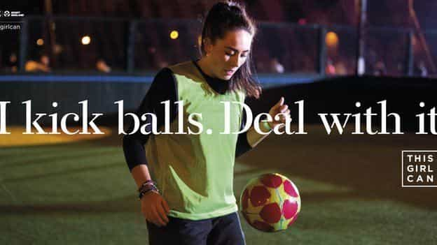
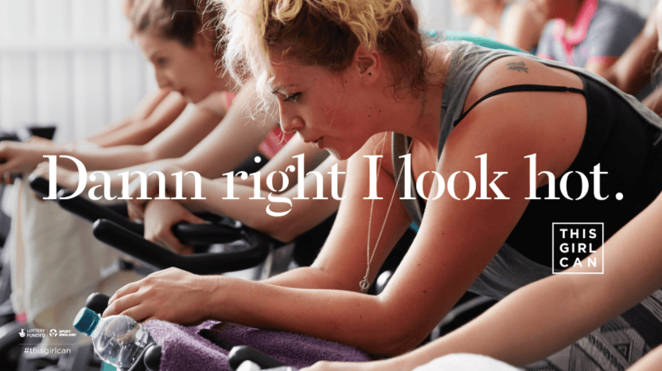
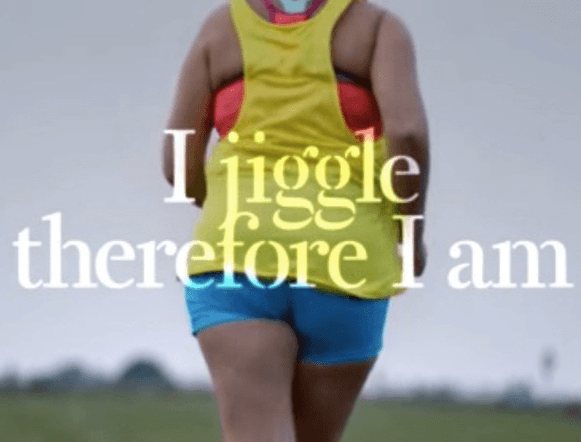

< < < Back
UK Government Funds Feminist Agitprop With “This Girl Can” Campaign – Return Of Kings
The latest arm of the UK government to fall under the feminist spell is Sport England, a quasi non-Governmental Organisation (“Quango”) funded by the Treasury and National Lottery and tasked with promoting sport in England. It is running an advertising campaign address the so-called gender gap in women’s participation in sport.
The method used is placing adverts on TV and a series of highly visible outdoor posters showing women doing some sporting activity. Through the obnoxious slogans, the campaign manages to be both alienating to men and patronising to women. Some examples of the outdoor posters follow.
The empowering allusion to violence against male genitalia

The delusion that this is anyone’s idea of hot

The actual hot

The fish rots from the head down
The Quangocrat heading Sport England is Jennie Price. She is paid a modest annual salary of £128,333 to oversee the distribution of a £1billion five-yearly budget to different sports projects across England. The rationale behind the decision to give ad agency FCB Inferno a chunk of this money to execute this campaign is given by Price:
We looked very carefully at what women were saying about why they felt sport and exercise was not for them. One of the strongest themes was a fear of judgment. Worries about being judged for for being the wrong size, not fit enough and not skilled enough came up time and time again. We want to address that.
Jennie Price, a smug feminist in a highly-paid public sector job.
Price, who peppers her promotion of This Girl Can with calling-card phrases like “gender gap” and “women and girls,” seems to consider women to be mental inadequates incapable of overcoming imaginary mental barriers which prevent them from doing sport. Government must therefore intervene to mollycoddle these women into removing their fat arses from the sofa. Price continues:
This Girl Can celebrates the women who are doing their thing no matter how they do it, how they look or even how sweaty they get. They’re here to inspire us to wiggle, jiggle, move and prove that judgement is a barrier that can be overcome.
What judgement? In my time spent in gyms and dojos, I have never experienced or overheard any judgement of out-of-shape newcomers. When I started training as a novice at a BJJ club, rather than judge me for my incompetence, senior belts went out of their way to show me the ropes.
In sports, an amateur will be made aware of his place in the hierarchy, such as ahead of major competitions. In combat sports, for example, experienced fighters get picky about who they spar with, a fighters vs. non-fighters split forms in the gym, and so on. That’s the nature of competitive sport, and not a reason to take things to heart. It’s not always about you, the special snowflake.
Real athletes direct their judgment inward, to their own performance. If people exist who intentionally give newcomers to the gym, the dojo or the club a hard time, they are not athletes, they are arseholes. Dealing with arseholes is a part of adult life. It is not for government to cajole and mollycoddle citizens who are paralysed by the remote possibility of having to dealing with a living, breathing arsehole.
Full Fat Ahead
The worst Shakespeare reference in history.
This Girl Can continues the initiative to shoehorn fat acceptance ideology into UK public discourse. The “I jiggle, therefore I am” spot features an obese female engaging in the notoriously effective weight-loss method of jogging. Kim Gehrig director of the video ads, says she “wanted to make the first advert that ever celebrated cellulite.” Leanne Flinn, a casting director, says: “Our focus was on finding real women doing what they do… rather than adopt the kind of Nike/Adidas take on athletes which, for some, though aspirational is also quite alienating.”
The message is confusing: This Girl Can is a celebration of women doing sport and also a celebration of out-of-shape women. It is an initiative to help women overcome their fear of judgment and also a judgment aimed at women who succeed in their ambition to look good. The latter are, apparently, not “real” women. In propaganda, logical integrity is not a priority.
The impossibility of pleasing everyone
Considering that the standard for what constitutes politically correct thinking seems to change by the hour, it is unsurprising that some feminists reacted negatively to This Girl Can. The flak came from Jessica Francombe-Webb, a career academic with an interest in “body image and identity politics” and Simone Fullagar, a self-described “interdisciplinary sociologist” with “a particular focus on gender and diversity issues” relating to sport and leisure. The pair saw some “serious problems” with the campaign, like women being referred to as “girls.” They also complain about the slogans, which are:
infused with popular post-feminist appeals to individual empowerment – “I jiggle, therefore I am”. This “can-do girl” is happy “sweating like a pig, feeling like a fox” and embracing being “hot and not bothered”.
The TV ads similarly have “serious problems”: they are too similar to pop music videos “where highly mobile, athletic female bodies are performing for a male audience”:
This sits uneasily with our concerns about the objectification of the female body. Research has shown that physical activity in the pursuit of desirability is something women eagerly “work on” under the auspices of the male gaze.
Stripped of the pseudo-intellectual language, Fullagar and Francombe-Webb’s message is that women often try to improve their physiques through exercise for the benefit of the men they desire. For once, it seems like an organisation with a feminist agenda (Sport England) has used heterosexual desire to promote its work. For these two experts, however, this is sailing too close to the wind. To imply that women self-improve out of a desire to sexually please men means to accept innate differences between the sexes, a form of blasphemy to gender feminists.
The scholars go on to bemoan the fact that some fatties will remain fatties: “What is troubling about the hallmark of “have-it-all” femininity is that such identities are not equally available to all or equally desired by all women.” The campaign, they say, is “push[ing] a neoliberal rhetoric of ‘free choice’ to look a certain way, or move in a certain way; yet the choices available are narrow, restrictive and predicated on a narrow version of sexiness.”
Permanent revolution
To this priestly caste of grievance-mongers, no single, static order of things can possibly be acceptable. Women are “objectified” by the “male gaze” causing them anguish eating disorders. The solution to this? Body acceptance. Guzzle down high-calorie coffee products and cake, let your weight balloon and then make men culpable for not finding your repulsive physique attractive.
When heffalumps are clogging up GP’s surgeries and studiously avoiding physical exercise, a new solution is needed: pay advertising professionals to convince them to take exercise. However, you must do it in the right way. If women are motivated to get in shape by the prospect of increased male desire, that is “problematic” to theorists like Fullagar and Francombe-Webb, so the baby is thrown out with the bathwater and the search for solutions begins anew.
Conclusion
A feminist counter-argument might say:
But Gumbril, as a reactionary heterosexual male with a patriarchal ideal of the feminine physique, you should welcome a campaign like This Girl Can because it will create more fit, slim, healthy women.
It’s a tempting argument, but insufficient. The promotion of sport is a legitimate aim, but a project like This Girl Can siphons money away from real investment, whilst generating headlines for pharaonic pen-pushers like Jennie Price. Why build a new football pitch when you can fund a team to produce nice posters?
This Girl Can shows us how state-funded feminism works as a jobs programme for bureaucrats and their enablers in the creative industries. The sooner these vanity projects are torn up and the money redirected to tangible things that benefit both sexes, the better. I won’t hold my breath.
Read More: Pirates, Government, And Red Pill Anarchy


{kind=link}
{kind=link}
{kind=link}
{kind=link}